Photos taken using a old Pentax K-30. Photos are only reduced to a width of 2000px to better load on the web. Lenses used: 18-55 mm (airplane and marble building photos) and a manual 80-200 mm (all the rest).
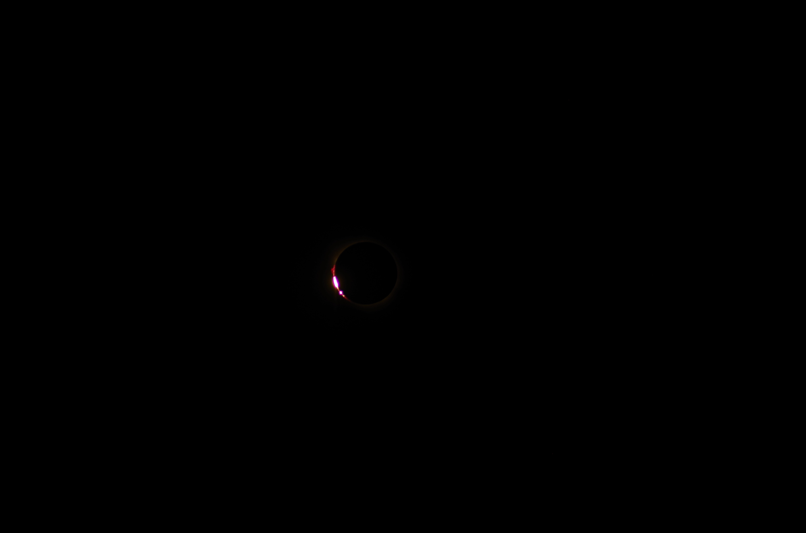
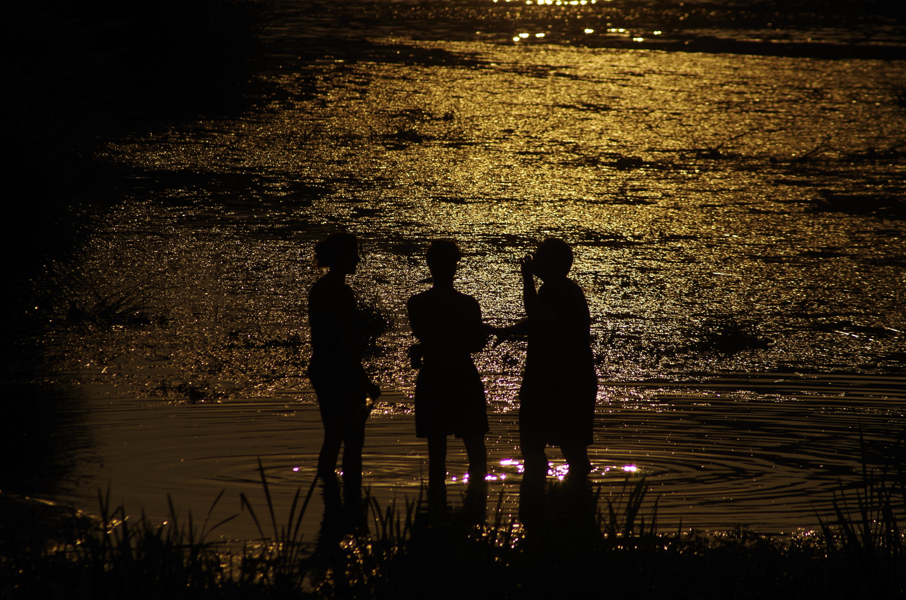
Shots I took 12/8/26 at Tordesillas
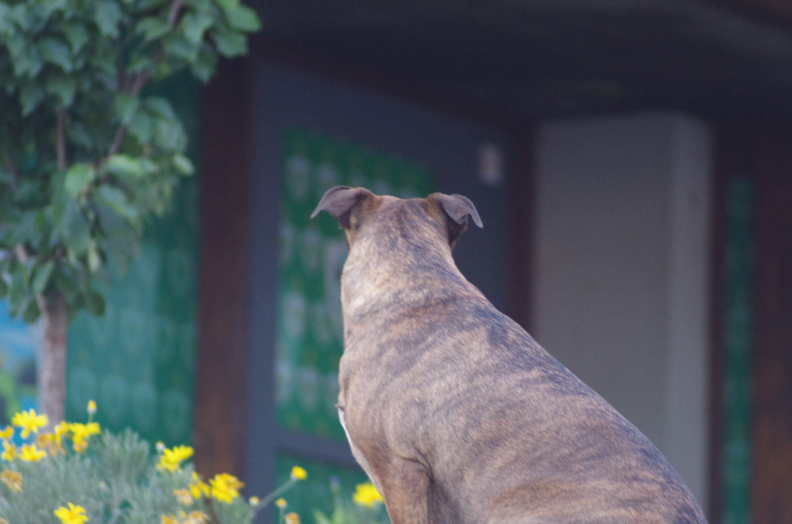
*uvi* *uvi*
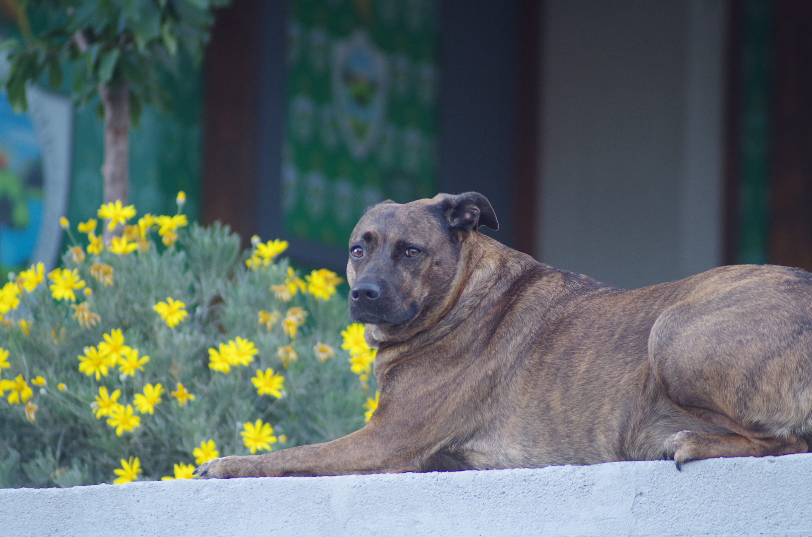
e quiê?
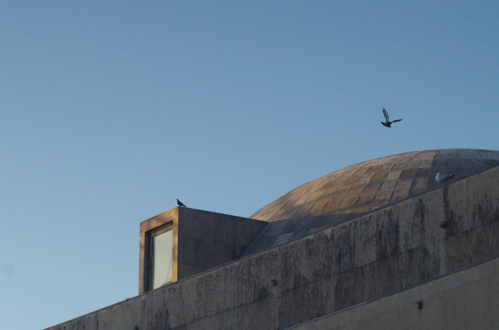
pigeon airforce patroling da spot
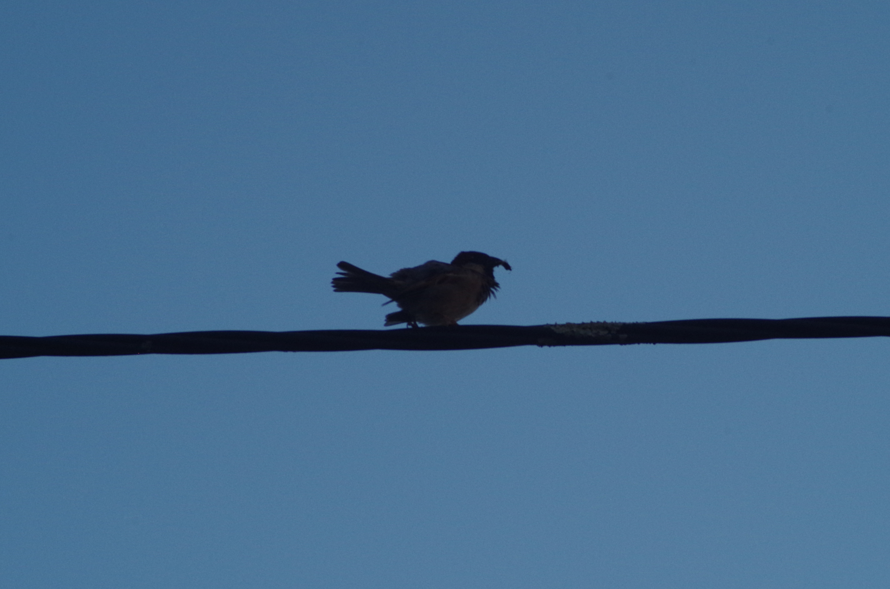
piu piu bruv
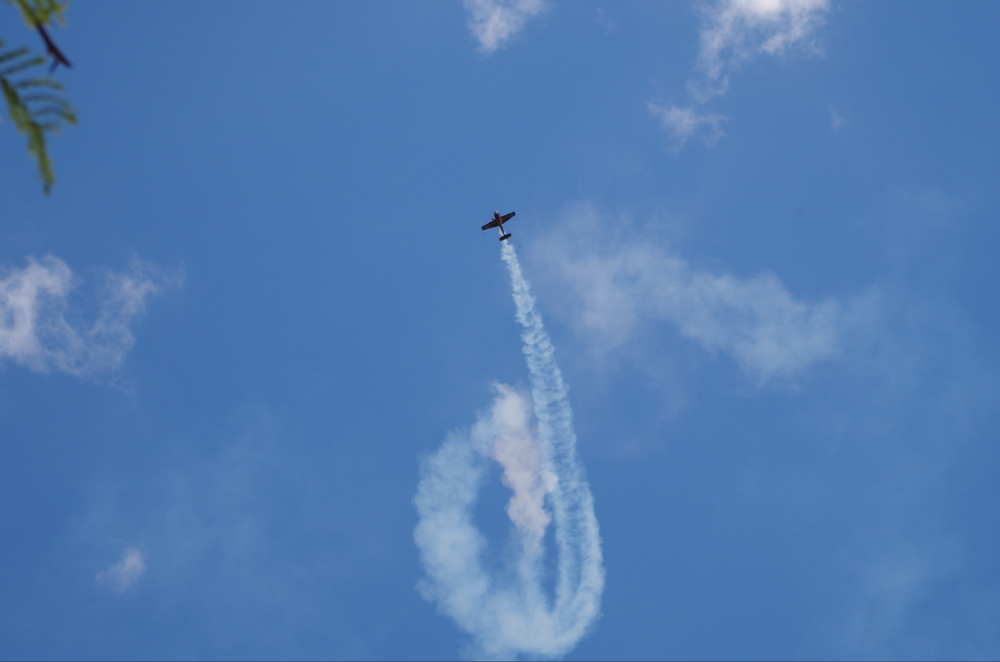
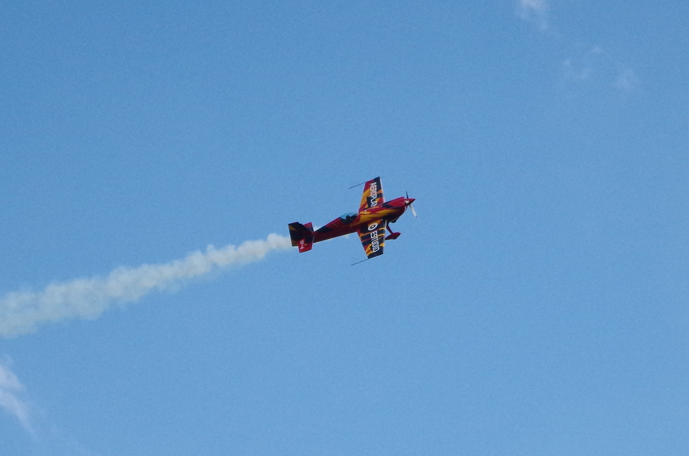
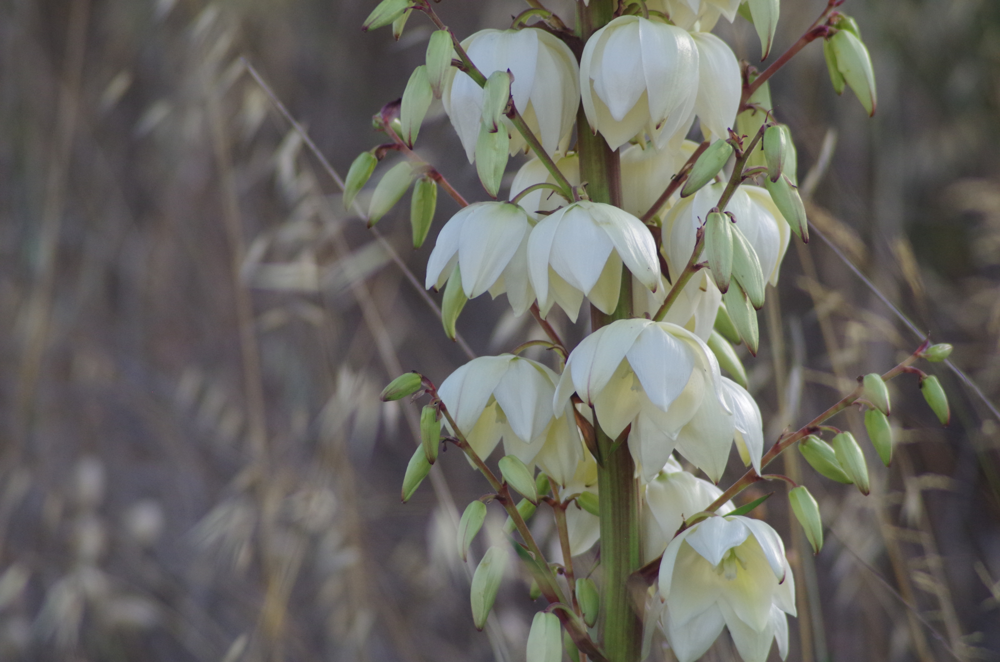
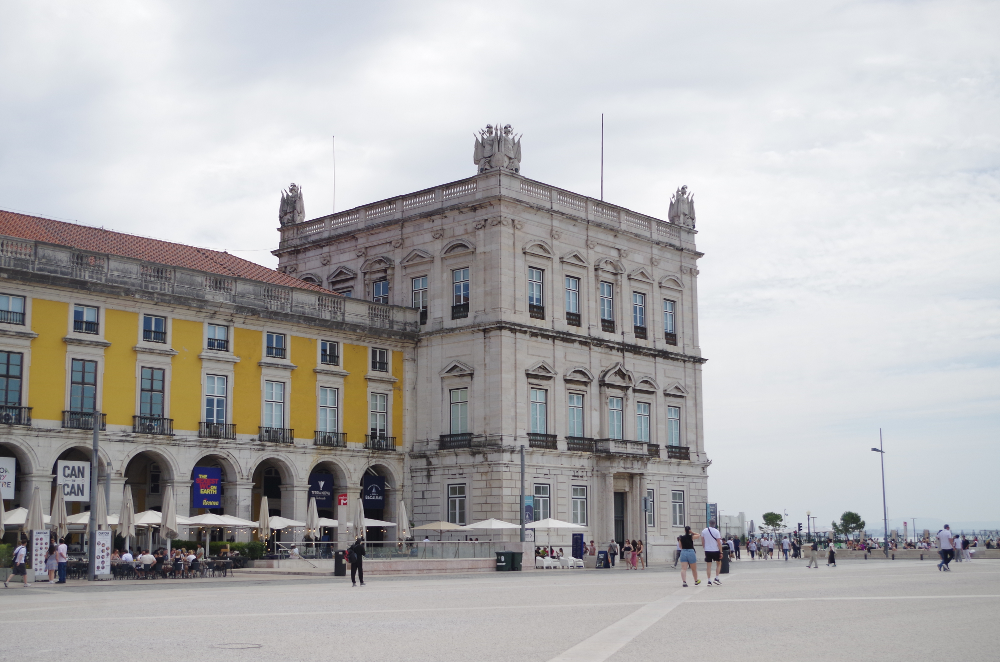
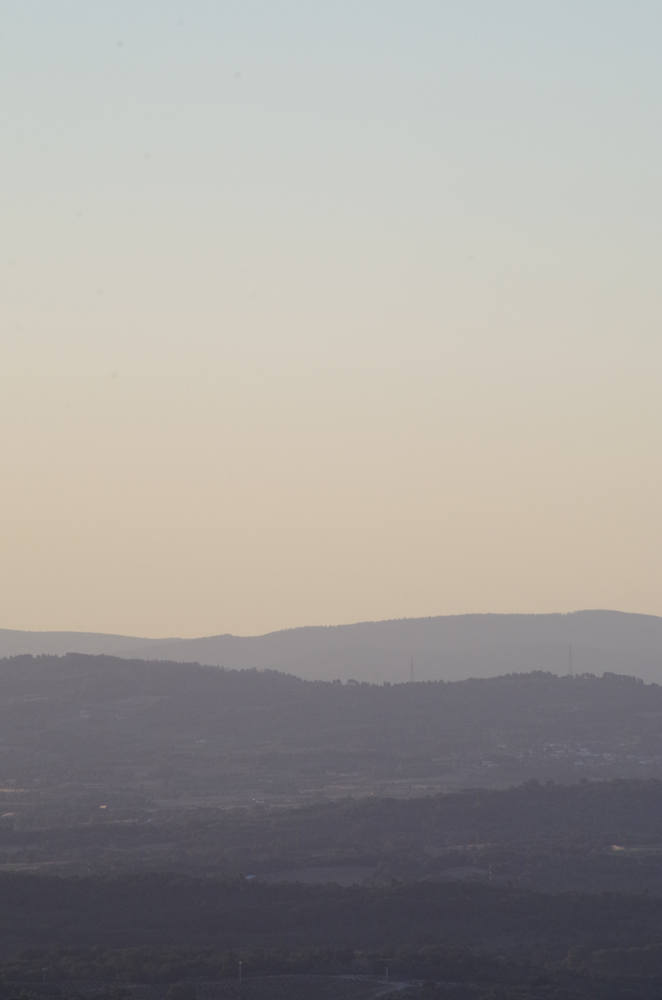